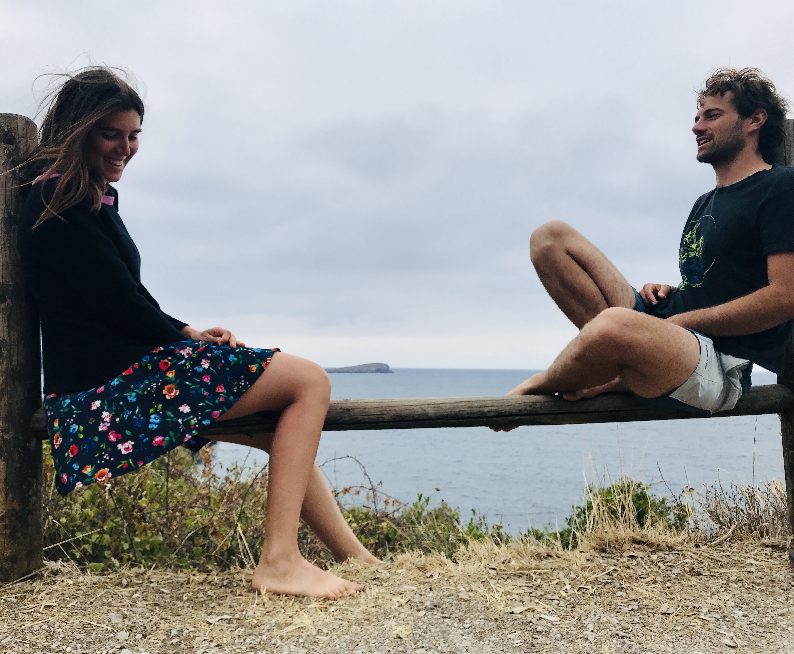
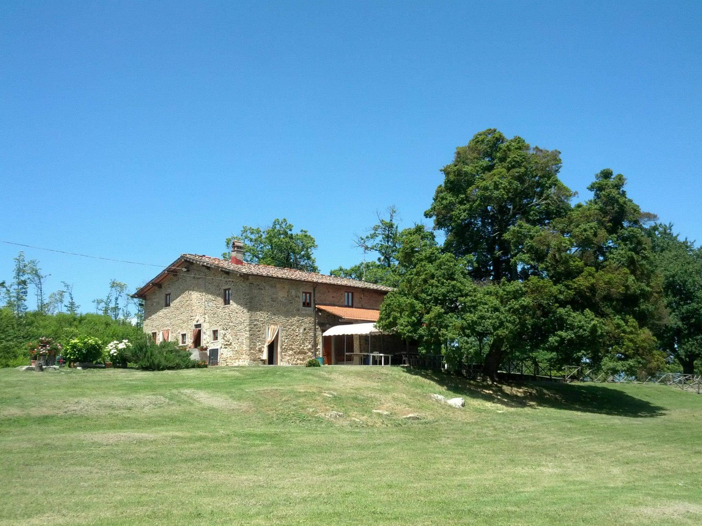
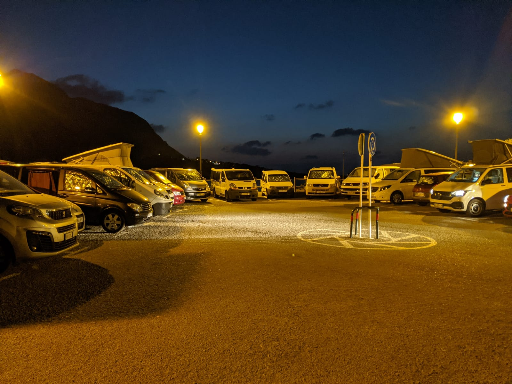

30 settembre 2023
Chiara & Elia
Dove e Quando
Sabato 30, settembre 2023 ore 11:30
Pieve di Dicomano
📍 Via della Pieve 25, Dicomano FI
Il parcheggio della chiesa riesce a ospitare poche macchine purtroppo, alternative valide: parcheggio selvaggio o un comodo parcheggio della coop a 50 mt dalla Chiesa.
Parcheggio Coop
📍 Via Vittorio Veneto 159, Dicomano FI
Festeggiamenti

Tenuta Ferracci
📍 Via della Tassaia 58, Borgo San Lorenzo FI
Dopo la cerimonia festeggeremo alla Tenuta Ferracci dove ci sarà la possibilità di parcheggiare all’interno.
Vi consigliamo di portare qualcosa per coprirvi perché la sera potrebbe far freschino!
Se siete intimoriti dal lungo viaggio, niente paura!
Ci sarà la possibilità di arrivare il venerdì 29 sera, dopo le 18.30, per sistemarsi con calma e iniziare a festeggiare insieme.
Penseremo a tutto noi!!
Voi munitevi del necessario per dormire, i posti letto saranno i medesimi del sabato sera.
Vi chiediamo di compilare il link qui sotto per confermare la vostra presenza alla cena del venerdì così da riuscire a organizzare tutto al meglio! Entro l’1 settembre.
📝 Cena Venerdì 29
Pernottamento
